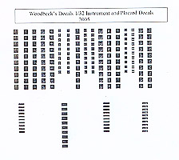
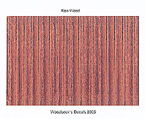

Woodbeck Decals
Images and text Copyright © 2005 by Matt Swan
Once upon a time all detail on instrument panels had to be hand painted except for those few occasions when the manufacture might include a instrument decal for the specific aircraft. This left an unfilled hole in the needs of the common modelers and one company stepped up to the plate and filled that need – that was Reheat models with a very nice sheet of instrument decals in 1/72 and 1/48. Unfortunately Reheat has closed their doors and those instrument decals became as rare as hen’s teeth. That hole has not been left unfilled for long; Jeff Woodbeck of Woodbeck Decals has begun production of his own line of decals beginning with a series of World War Two instrument decals available in 1/72, 1/48 and 1/32. Pictured below left is the 1/32 sheet.


These are 72dpi scans so some resolution and color intensity has been lost.
In addition to the beginning line of instrument decals Woodbeck Decals is also offering a small line of natural wood decals, something that should be very useful to the World War One modelers. Currently they have Koa Wood, Ashen Wood and Burl Oak available. One item of interest on the instrument decals is that these are not simply created on a piece of graphics software but begin with a digital picture taken of actual aircraft instruments. The decals are printed with a high grade ink jet printer on white decal paper so the images must be closely trimmed before use.
Decal sheets are sold individually with prices ranging from $7.00 to $13.00 per sheet. For ordering information email Jeff Woodbeck. Future plans include miscellaneous pump and cab gauges on modern emergency vehicles. Soon there will be a website operational with the full line of Woodbeck decals listed.
Conclusions
These are nice decals that will make a great addition to your tool box. Not only are they useful for detailing dashboards but good for those pesky wooden propellers. Review samples courtesy of Woodbeck Decals.